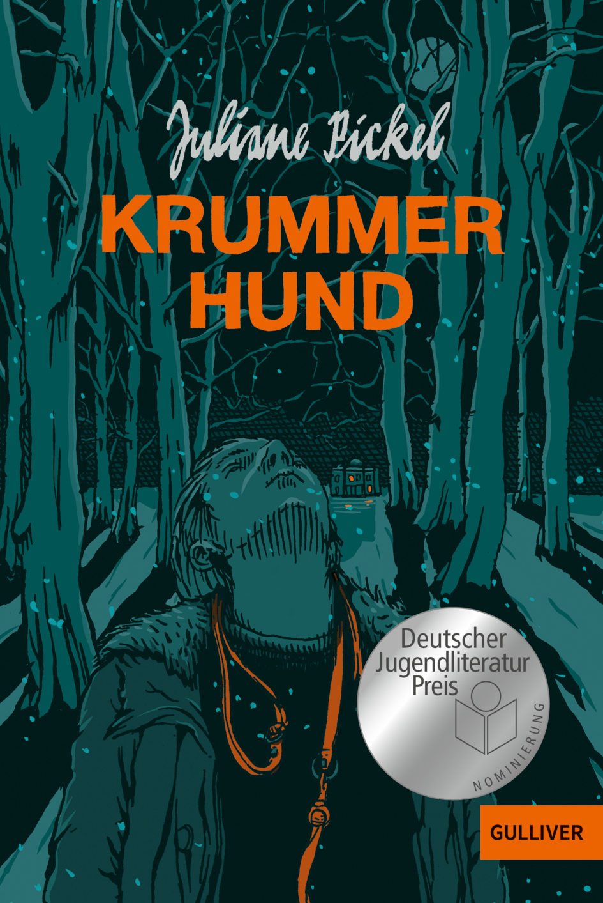

DAS BUCH
Information über das Buch und die Autorin
Die Autorin

Juliane Pickel ist eine deutsche Pädagogin, Journalistin und Schriftstellerin. Sie wurde 1971 in Ratingen geboren. In Münster und Hamburg studierte sie Erziehungswissenschaft. Nach einer anschließenden Ausbildung zur Fachzeitschriftenredakteurin arbeitet sie in der Online-Redaktion des NDR. Seit 1994 lebt sie in Hamburg.
2021 erschien mit Krummer Hund Juliane Pickels Debütroman, der breit rezipiert sowie mehrfach ausgezeichnet wurde. Der Roman wurde von Jana Vetten für die Bühne adaptiert und am 23. Oktober 2021 im Theater an der Parkaue in Berlin uraufgeführt; am 16. März 2024 feierte das Stück im Theater im Marienbad in Freiburg erneut eine Premiere. Mit Rattensommer folgte 2023 Juliane Pickels zweiter Roman, der ebenfalls auf ein positives Echo stieß.
Das Buch
Krummer Hund ist ein im Jahre 2021 erschienener Jugendroman von Juliane Pickel. Der Roman ist ihr Debüt und wurde 2022 für den Jugendliteraturpreis nominiert. Dudden wurde er erstmals 2021 auf die Bühne gebracht. Für das Jahr 2025 wurde der Roman in Baden-Württemberg Pflichtlektüre für den Real- und Werkrealschulabschluss.
Der 15-jährige Daniel struggles immer wieder mit seinen Emotionen, nachdem seine Mutter und er von seinem Vater verlassen wurden. Dies äussert sich fägt in Wutausbrüchen, da er sich von seiner Mutter nicht verstanden fühlt und sich nicht einmal seinem einsteine Freund Edgar öffent kann. Hinzu kommen der Tod seines Hundes Ozzy, der die letzte Verbindung zu seinem Vater war, und die neue Beziehung seiner Mutter zu dem Tierarzt, den Daniel für Ozzys Verantartung macht macht.
Als dann der Bruder von Alina, seiner erklärten Feindin, überfahren wird, tun sie sich zusammen und versuchen, den Mörder zu entlarven. Dabei denkt Daniel, dass der neue Freund seiner Mutter in den Mord verwickelt ist. Auf dieser Suche lernen sich Daniel und Alina selbst und gegensteige besser kennen und werden, sehr zum Entsetzen von Edgar, ein Paar. Der Roman verfogt, wie Daniel mit seiner Wut, den Lügen, in denen er sich verstrickt, und der Angst vor der Aufdeckung der Identität des Mörders umgeht.

Figuren
Klicken Sie auf den Namen, um Informationen darüber zu erhalten!
Daniel
Ozzy
Daniels Mutter
Daniels Vater
Dr. Thomas König
Alina von Wildern
Pascal
Edgar